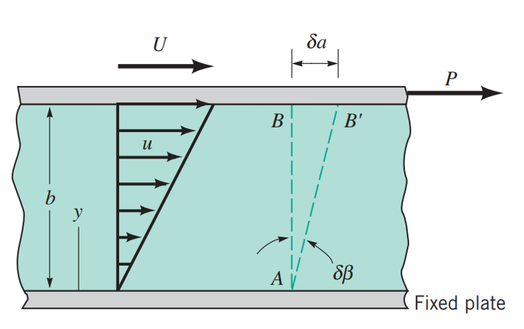

Liquids and gases are considered liquids. For the purposes of this course, we will only really consider liquids. The heat transfer capability and incompressibility of liquids is useful for power transmission.
Hydraulic fluids have to achieve many things. Hydraulic engineers make use of their properties to achieve the different functions required in a hydraulic power system. To keep the system working well, engineers and technicians also need to consider the condition of the fluid. Some of the things to consider are:
These properties affect not just the system, but the environment around it. Maintenance, leaks, and disposal are all part of the life cycle of the system.
Hydraulic fluids are made of water, oil, synthetics and other additives to adjust the fluid to the desired properties.
The amount of space an object takes up is its volume. The greater the volume of the object, the more space it will fill.
The more volume a car has, the bigger it is.
The amount of matter in an object is its mass. The greater the mass of the object, the heavier it will weigh when subjected to gravity.
The more people in a car, the more it will weigh.
If an object or substance is more dense, it can be heavier than a less-dense object even if it is the same size.
A box of metal is heavier than a box of feathers.
Fluids are practically incompressible. They also don't expand like air to fill a container. Therefore, we are 'stuck' at a particular volume of fluid.
Gravity varies with altitude, but we don't design systems to go from the ground floor to Everest, so the only variable is the density of the fluid. The more dense the fluid, the more mass it will have, and the heavier it will weigh.
We need to know this because it has direct effects on the design and performance of the hydraulic power system.
The density (ρ) of water, usually given as 1000 kg/m^3^, means that 1 cubic metre of water has a mass of 1000 kg. Using the formula below, this means that 1 cubic metre of water weighs 9810 N.
\begin{array}{ll} F = W = mg\\ \\ where\\ \\ F = force\ (N) \\ W = weight\ (N) \\ m = mass\ (kg) \\ g = gravitational\ constant\ (9.81 m/s^2) \end{array}
Since hydraulic fluids are usually made of oils or synthetics that are less dense than water, they also weigh less. It's also helpful to have a way of comparing different fluids with a single number. We use specific weight to do this.
Specific weight, \gamma is a fluid's weight (N) per unit volume (m^3). We can also find it by multiplying density, \rho (kg/m^3) with the gravitational constant, g.
The specific weight of fluid affects how power is transmitted in the system, the mechanical design of components, and sealing, among other things.
Specific gravity (SG) is defined relative to water and is given by the following equation. This means SGwater is 1 by definition.
SG_{oil} = \frac{\gamma_{oil}}{\gamma_{water}}Using SG provides a standard baseline to compare fluids. Since it is dimensionless, it simplifies engineering calculations. SG can help us predict how contaminants will behave in the fluid, affecting filter design. Also, the hydraulic power industry has been around a long time, and they simply prefer it since many tables and equations have been developed around SG.
Pressure (Pa) is force (N) per unit area (m^2), shown in the formula below. Since hydraulic power relies on moving fluid around and pushing it against components, the amount of pressure the system can generate is directly related to the force exerted. Pressure is also equally equally distributed throughout the entire system, so the maximum pressure a system can sustain is limited to the strength of its components. This is further discussed in Chapter 5: Hydraulic Conductors and Fittings.
P = \frac{F}{A}Bulk modulus is a measure of how compressible a fluid is. Higher bulk modulus = less compressible and vice versa. The formula for bulk modulus is given as
\beta = \frac{-\Delta P}{\frac{\Delta V}{V}}\begin{array}{ll}
\\
where\\
\\
\beta = bulk\ modulus\ (kPa)\\
\Delta P = change\ in\ pressure\ (kPa)\\
\Delta V = change\ in\ volume\ (m^3)\\
V = original\ volume
\end{array}Bulk modulus is important in balancing the requirements of the system with efficiency, durability, and reliability. Some factors that influence decisions to choose fluids with higher or lower bulk modulus is shown below
| Factor | High Bulk Modulus (Low Compressibility) | Low Bulk Modulus (High Compressibility) |
|---|---|---|
| System Response | Fast and precise | Slower but smoother |
| Best for Actuators | High-speed, high-precision actuators | Soft-start or gradual-response actuators |
| Cavitation Risk | Lower risk of cavitation | Higher risk in some cases |
| Common Fluids | Mineral oils, synthetic oils, phosphate esters | Water-glycol mixtures, some fire-resistant fluids |
| Energy Efficiency | High efficiency, less energy loss | Energy loss due to fluid compression |
| Example Applications | Servo systems, aircraft hydraulics, CNC machines | Shock absorbers, hydraulic suspensions, pipeline surge control |
| Pipeline Systems | Preferred for rigid, high-pressure systems | Used where pressure surges must be minimized |
| Shock Absorption | Stiff, transmits force directly | Absorbs shocks, dampens vibrations |
| Thermal Expansion Compensation | Less compensation, more rigid system | Absorbs volume changes due to temperature |
| Water Hammer Control | More prone to pressure surges | Reduces pressure spikes |
Viscosity is a measure of a fluid's resistance to flow. The more viscous the fluid, the less easily it flows. If the viscosity of a fluid in a hydraulic power system is not at the design specification, it will cause problems.
High viscosity will result in:
Low viscosity will result in:
The viscosity of fluids is determined experimentally and one such experiment involves 2 plates in parallel with the fluid in between them. Absolute viscosity, \mu is derived in this way.
The plate on top is moved at a constant speed while the plate at the bottom is fixed. The shear stress, \tau and strain rate \dot{\gamma} are related by equation below, which gives us the viscosity, \mu. A full discussion is given at the end of this page.
\tau = \mu \frac{du}{dy}By re-arranging the equation for μ, and noting that shear stress is force divided by area, we can formulate an equation to calculate the absolute viscosity:
\mu = \frac{Fy}{vA}Kinematic viscosity*, \nu\ (m^2/s), is further derived by relating the absolute viscosity, \mu to density, \rho as shown below.
*the symbol used is the Greek letter nu, so it is sometimes labelled V to differentiate from velocity (v)
\nu = \frac{\nu}{\rho}We use kinematic viscosity to get a fuller understanding of the fluids' behaviour under different conditions.
Being an old engineering discipline, many hydraulic power formulas and industry practices pre-date the SI unit system. Other unit systems in use include English slugs and lbs. or Centimetre-Gram-Second (CGS), and other convenient units like Stoke, Poise, dyne, gallons, and litres. We will stick to SI in this course but other units are still common in component specifications and design tables. Below is a table showing some common values in other units and how to convert them to SI.
| Convert from | Convert to | Multiply with |
|---|---|---|
| gpm | m³/s | 6.31e⁻⁵ |
| psi | N/m² | 6,895 |
| Stoke | m²/s | 1/10,000 |
| centistoke | m²/s | 1/1,000,000 |
| W | HP | 1/745 |
| L/min | m³/s | 1.67e⁻⁵ |
Step 1:
Consider a small time increment \delta t in which an imaginary line AB rotates by a small angle \delta \beta, which can be formulated as
tan \delta \beta = \frac{\delta a}{b}Using small-angle approximation:
tan\ \delta \beta \approx \delta \beta = \frac{\delta a}{b}\quad (1)where \delta a is the horizontal displacement of point B and b is the distance between the plates.
Step 2:
U is the velocity of the top plate, which over an incremental time period \delta t is:
\delta a = U \delta t\quad (2)
substituting (2) into (1), we get the equation:
\delta \beta = \frac{U \delta t}{b}\quad (3)Step 3:
By using the rate of change of \delta \beta to define the rate of shearing strain:
\dot{\gamma} = \lim_{x \to 0} \frac{\delta \beta}{\delta t}\quad (4)Substituting (3) into (4), we obtain:
\dot{\gamma} = \frac{U}{b}Since the velocity gradient is linear, we can generalise rate of shearing strain as:
\dot{\gamma} = \frac{du}{dy}\quad (5)Step 4:
Since shear stress \tau is directly proportional to rate of shearing strain \dot{\gamma}, we can relate it to (5) to get:
\tau \propto\ \frac{du}{dy}\quad (6)From (6), we can derive a constant \mu and call it viscosity, giving us the equation:
\tau = \mu \frac{du}{dy}The higher the value of \mu, the slower the velocity changes.